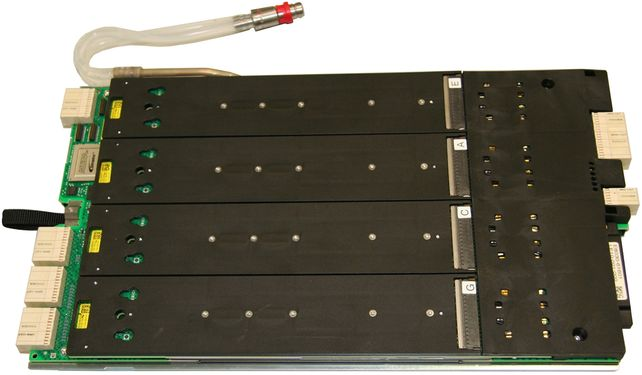

PS1600 specificationsSubtopicsPS1600 overviewPS1600 TimingPS1600 driverPS1600 programmable loadPS1600 receiverPS1600 Parametric Measurement Unit - PMU per pinPS1600 board ADCPS1600 Time Measurement Unit - TMU per pinPS1600 AWGPS1600 Digitizer Download specifications PDF: V93000 SOC Pin Scale 1600 Digital Card  Related informationCard Cage to Pogo Block Standard Assignments Functional changesIntroduced in SmarTest 7.1.0
 Download specifications PDF: V93000 SOC Pin Scale 1600 Digital Card Download specifications PDF: V93000 SOC Pin Scale 1600 Digital Card
Download specifications PDF: V93000 SOC Pin Scale 1600 Digital Card Download specifications PDF: V93000 SOC Pin Scale 1600 Digital Card